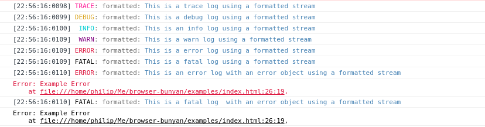

Client-side Logging with Browser Bunyan
2015-11-14
In my Node/Express app, Pagespace, and various CLIs I’m working on, I try to provide a decent amount of logging. As recommended by Joyent, I use Bunyan as my chosen logging framework. Bunyan’s premise is to store logs in a structure format, JSON. It also has some other nice features I find useful such as streams, child loggers and serializers.
Bunyan is also great for client side Javascript logging in more complex frontend applications. The ability to log to multiple streams has been useful. One such application I’ve been working on can run in mobile webviews as part of an Android or iOS app. In such scenarios, its been useful to stream logging to a native bridge as well as the webview console. Another example I’ve worked on is a web app for running W3C widgets. The widget runs in an iframe, while the parent frame provides various client-side tools for developing and debugging a widget. The code running in the iframe uses Bunyan logging with two streams; one logs to the standard browser console, while the other posts messages to the parent frame which outputs the logs records as HTML.
Running Bunyan is possible in the browser by way of Browserify. But, unfortunately, this means it still pulls in a bunch of dependencies which aren’t relevant in the browser environment and a bit too bloated for my liking. Therefore, I created a fork of Bunyan, Browser Bunyan, for running a lightweight build of Bunyan in the browser.
Browser Bunyan can be used via Browserify or as a standalone build and is available via Bower and NPM. It also ships with a bonus out-of-the-box stream for pretty printing logs to the browser console:
var log = bunyan.createLogger({
name: 'play',
streams: [
{
level: 'info',
stream: new bunyan.ConsoleFormattedStream()
type: 'raw'
}
]
});
log.info('hi on info');

Integrating with Angular
Pagespace’s dashboard application is written using Angular. I use Browser Bunyan as Angular’s logging implementation like this:
adminApp.config(function($provide) {
$provide.decorator('$log', function($delegate) {
$delegate = bunyan.createLogger({
name: 'myLogger',
streams: [{
level: 'info',
stream: new bunyan.ConsoleFormattedStream(),
type: 'raw'
}]
});
return $delegate;
});
});
The Github repo for Browser Bunyan is here